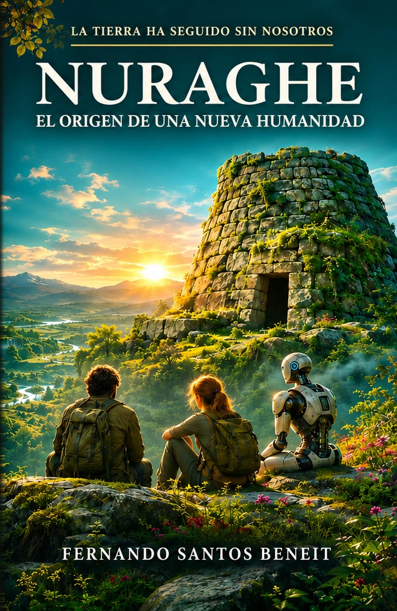

Diario Palentino
«De los laboratorios a la literatura de ficción». Entrevista con el autor en el periódico de su ciudad natal.
Leer entrevistaLiteratura · Ciencia · Cultura
NURAGHE: El origen de una nueva humanidad es la primera novela de Fernando Santos Beneit, doctor en Biología, investigador y escritor palentino.
Esta página reúne datos de referencia, materiales gráficos y entrevistas ya publicadas para facilitar el trabajo de periodistas, bibliotecas, librerías y espacios culturales.
Próxima presentación en Palencia
Ficha de la obra
La obra explora la supervivencia, la naturaleza, la genética, la inteligencia artificial y las decisiones que pueden definir el futuro de nuestra especie.
Perfil biográfico
Fernando Santos Beneit es doctor en Biología y está especializado en el estudio de bacterias productoras de antibióticos. Su trayectoria científica le ha llevado a trabajar en España, Países Bajos, Reino Unido y Lituania. Vivió durante cuatro años en Newcastle upon Tyne, ciudad que dejó su huella en el comienzo de la novela.
La idea de NURAGHE surgió en 2015 durante una visita a Su Nuraxi de Barumini, en Cerdeña. En su primera novela conecta su experiencia científica, sus viajes y su interés por la naturaleza con una pregunta de fondo: ¿merece la humanidad una segunda oportunidad?
Agenda cultural
La presentación oficial de la novela tendrá lugar el jueves 17 de diciembre de 2026, a las 19:30 h, en la Sala de Audición de la Biblioteca Pública de Palencia, C/ Eduardo Dato, 4.
Ver todos los detalles y compartir el cartelMaterial gráfico
Archivos de la web oficial, disponibles para ilustrar noticias y anuncios relacionados con la novela, citando la obra y al autor.
Entrevistas y referencias
«De los laboratorios a la literatura de ficción». Entrevista con el autor en el periódico de su ciudad natal.
Leer entrevistaEntrevista con Félix Rivas sobre la novela, emitida el 13 de mayo de 2026.
Escuchar entrevistaReportaje sobre la investigación en resistencia a antibióticos con declaraciones de Fernando Santos-Beneit.
Leer reportaje